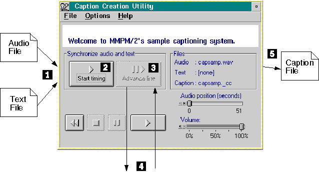

Program Flow
The following figure illustrates the interaction between the audio, text,
and caption file with the Caption Creation Utility program. Source code
for the Caption Creation Utility is located in the \TOOLKIT\SAMPLES\MM\CAPTION
subdirectory.

- Select an audio file and a corresponding text
file to synchronize with the selected audio file. For example, you might
want to synchronize the text of a poem with an audio file of someone reading
the poem. When you open a text file, the first line of text appears at the
bottom of the text window. The first line of the text file selected in the
example shown in the previous figure is "Welcome to MMPM/2's sample captioning
system."
- In order to begin the synchronization process,
you must select Start timing. The audio file begins to play and Advance
line becomes enabled.
- Select Advance line to scroll to the
next line of text. The next line of text is scrolled and appears in the
text window.
- When you select Advance line, the Caption
Creation Utility program passes the device ID, the MCI_STATUS command with
the MCI_STATUS_ITEM flag, and the MCI_STATUS_PARMS data structure with the
ulItem field set to MCI_STATUS_POSITION to the Media Device Manager
(MDM). Upon return, the ulReturn field of the MCI_STATUS_PARMS data
structure contains the current position of the device in MMTIME units.
- When the Caption Creation Utility program
receives the position value, it writes the time value and the line of text
to the caption file. The caption file contains the same text as the text
file, but each line in the caption file is preceded by the time in the audio
file when that line of text should be displayed.
[Back: CAPTION - Caption Creation Utility]
[Next: CAPSAMP and CAPDLL]